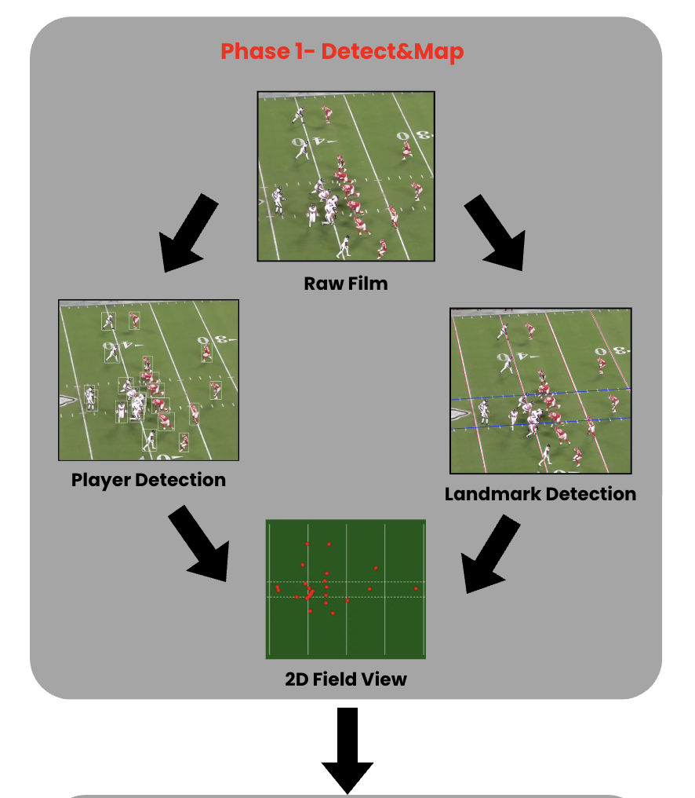
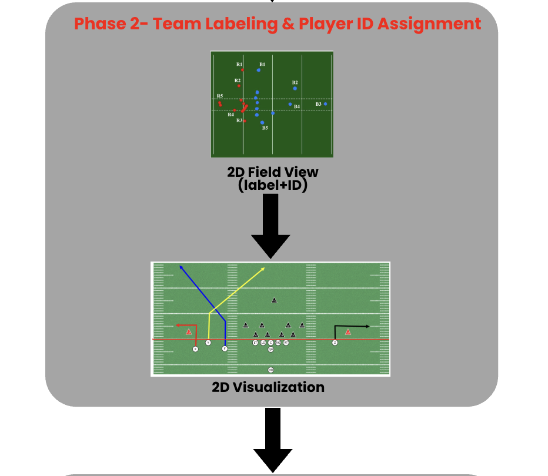
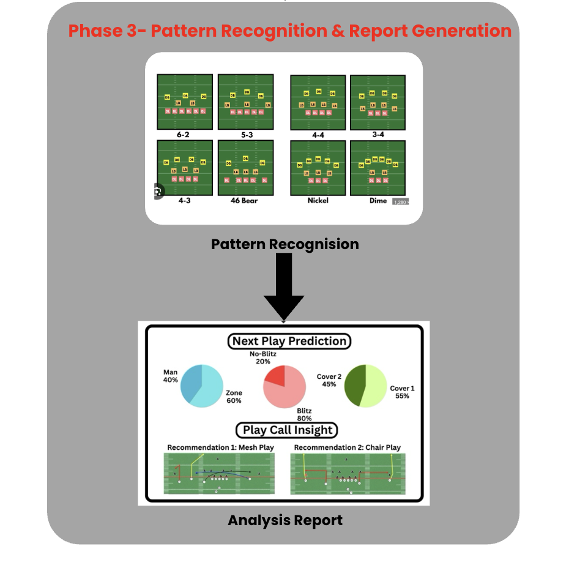
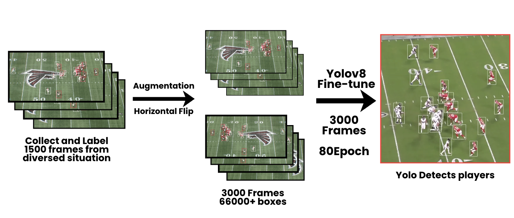
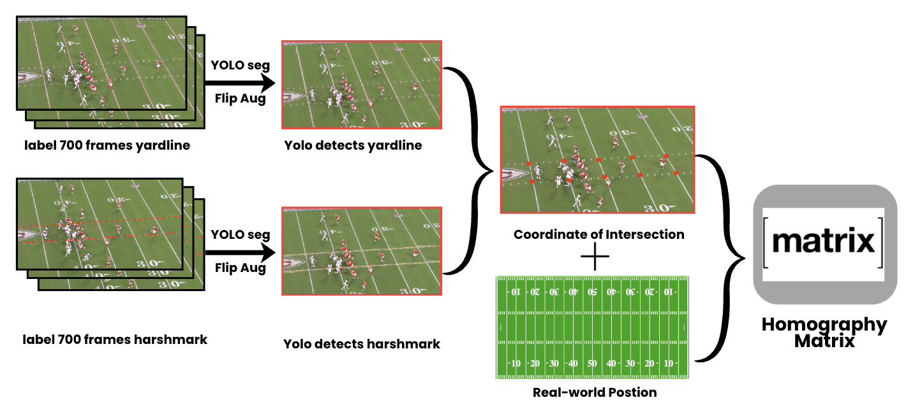
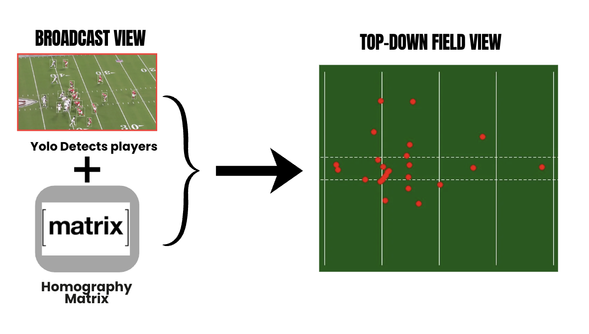
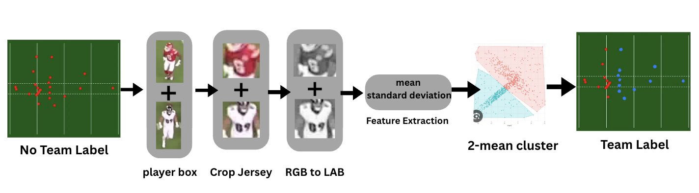
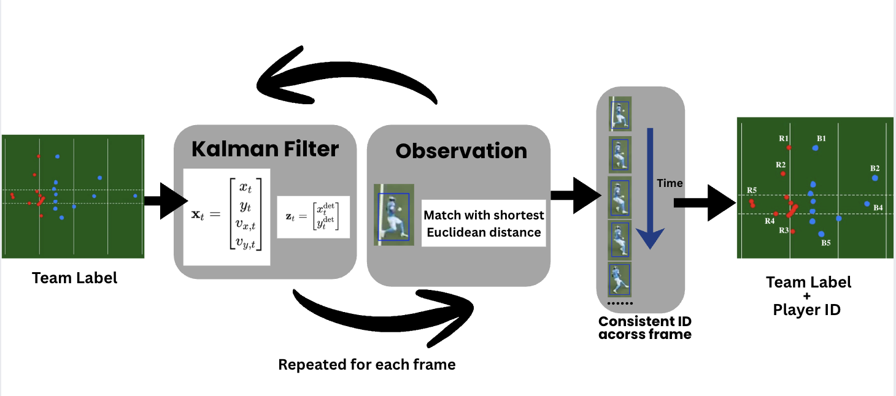
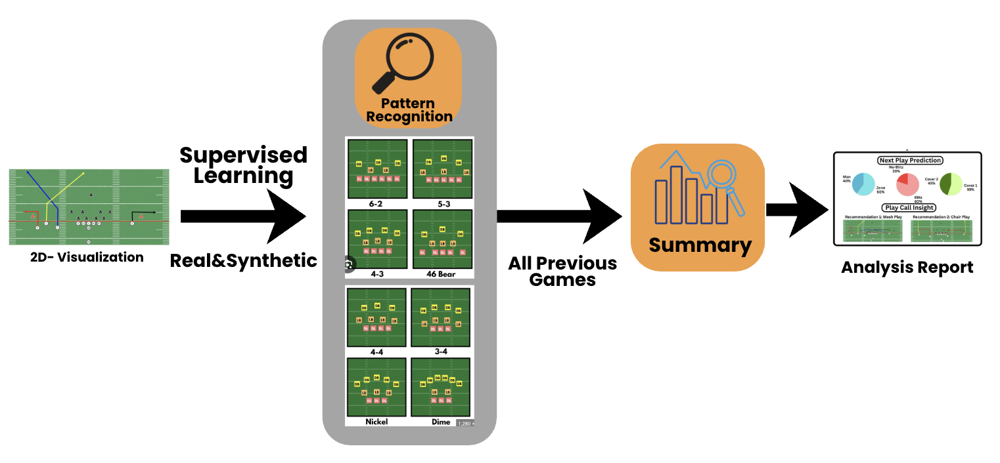

AutoScout
End-to-end AI system for automated American football film analysis.
1. What is AutoScout
AutoScout is an end-to-end AI system that automates American football film analysis by converting raw game footage into structured 2D player trajectories and tactical insights, reducing the need for manual expert annotation.
2. Motivation
Traditional football film study relies on labor-intensive manual analysis by domain experts, making it slow, costly, and difficult to scale, while existing computer-vision approaches typically address only isolated tasks such as formation recognition or field registration.
Motivated by the lack of a complete pipeline that handles multi-player detection under occlusion, spatial field mapping, and play-level interpretation, this project aims to deliver a unified system for scalable, objective football scouting.
3. Methodology
AutoScout consists of three sequential phases that convert raw football footage into tactical insights. Phase 1 detects and maps player positions onto a 2D field, Phase 2 performs team labeling and persistent player ID assignment, and Phase 3 conducts pattern recognition and generates insight-driven analytical reports.



3.1 Phase 1 — Detect & Map
We manually annotated 1,500 broadcast frames, applied horizontal flip augmentation to expand the dataset to 3,000 frames with over 66,000 bounding boxes, and fine-tuned a YOLOv8 model for 80 epochs to detect all 22 on-field players, outputting their bounding boxes and image-space coordinates per frame.

We trained two YOLOv8 segmentation models—one for yard lines and one for hash marks—each using 700 annotated broadcast frames.
The intersections of the detected landmarks are paired with their known real-world field coordinates to compute a RANSAC-based homography for mapping broadcast-view positions to a canonical field.


3.2 Phase 2 — Team Labelling & Player ID Tracking
For each detected player bounding box, we crop the jersey region and convert it from RGB to CIELAB color space.
We then extract per-channel mean and standard deviation features and apply 2-means clustering to assign team labels corresponding to the two opposing teams.

We use a Kalman filter–based tracking pipeline to predict each player’s position in the top-down field coordinate space across frames.
New detections are associated with predicted positions using nearest-neighbor matching based on Euclidean distance to maintain consistent player identities.

By combining team labeling and temporal tracking, Phase 2 produces a structured spatiotemporal representation where each player is assigned a team label and a persistent ID, enabling reliable 2D trajectory reconstruction and downstream tactical analysis.
3.3 Phase 3 — Pattern Recognition & Report Generation
Using structured player trajectories from Phase 2, we train a supervised pattern recognition model on both real broadcast-derived data and manually constructed synthetic plays to identify formations, play types, and individual player behaviors.
The recognized patterns are aggregated across games to generate automated scouting reports summarizing opponent tendencies, play-calling distributions, and player-specific behaviors.
